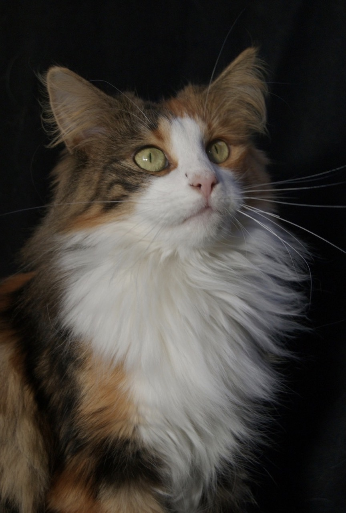

Norwegian Forest
The Norwegian Forest cat is adapted to survive Norway's cold weather. Its ancestors may include cold-adapted black and white British Shorthair cats brought to Norway from Great Britain some time after 1000 AD by the Vikings, and longhaired cats brought to Norway by Crusaders around the 14th century. These cats could have reproduced with farm and feral stock and may have eventually evolved into the modern-day Norwegian Forest breed.
The Norwegian Forest cat is strongly built and larger than an average cat. The breed has a long, sturdy body; long legs; and a bushy tail. The coat consists of a long, thick, glossy, water-repellent top layer and a woolly undercoat and is thickest at the legs, chest, and head. The undercoat appears as a ruff. The profile of the breed is generally straight. Their water-resistant coat with a dense undercoat developed to help the cat survive in the harsh Scandinavian climate.